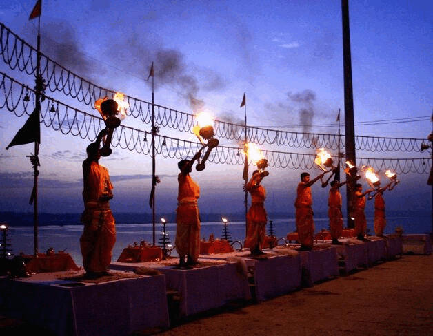
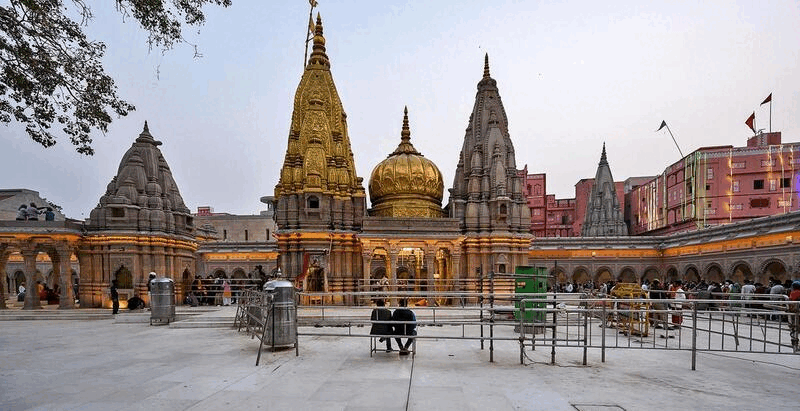

Surya Aarti : Subah-e-Banaras
| Time | 05:00:00 - 05:30:00 | ||
|---|---|---|---|
| Nearby | Assi, Tulsi Ghat, Janki Ghat | ||
| PIN | 221005 | ||
| Fee | Free | ||
|  |
There's also Yagya (Yajña) ongoing along with the Surya Aarti which you can participate in and they also organizes are classical programs.
Kashi Vishwanath Corridor : Ganges Gate
| Time | 05:00:00 - 19:00:00 | ||
|---|---|---|---|
| Nearby | Lalita Ghat, Manikarnika Ghat | ||
| PIN | 221001 | ||
| Fee | Free | ||
|  |
The best way to go Kashi Vishwanath Corridor is through boating from Assi Ghat to Lalita Ghat. The cost could be around Rs 100 - 150 per head after negotiation.
Kashi Vishwanath Temple
| Time | 04:00:00 - 23:00:00 | ||
|---|---|---|---|
| Nearby | Jangamwadi, Bansphatak | ||
| PIN | 221001 | ||
| Fee | Free | ||

|
Kashi Vishwanath Corridor : Ganges Gate will have the smallest queue, so you should prefer that way to enter the temple.